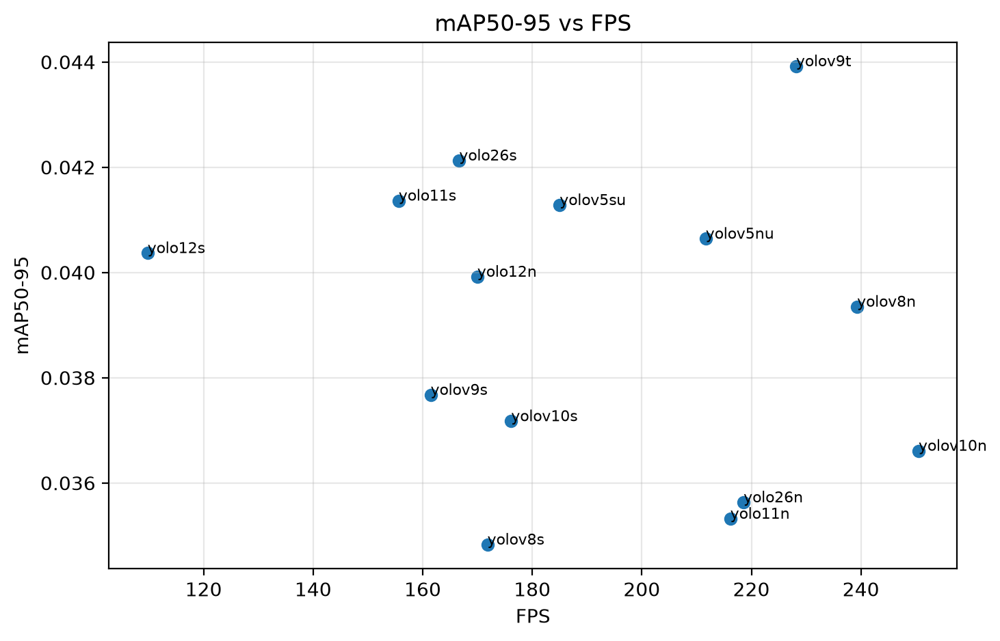
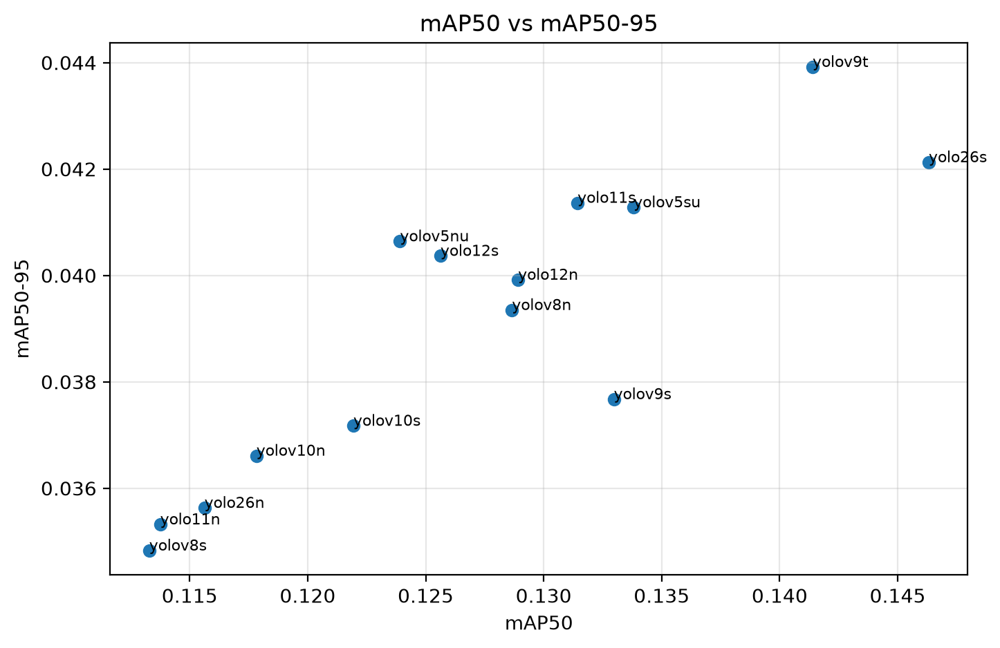
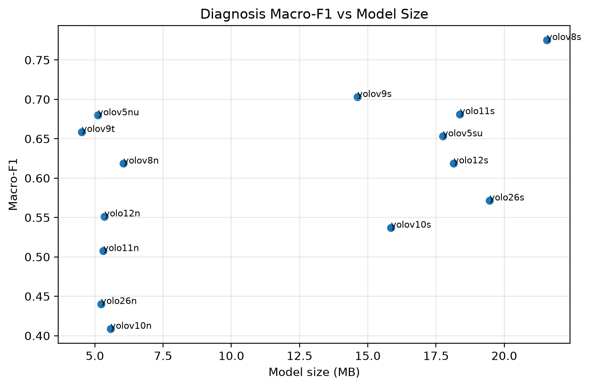

ShrimpDiseaseImageBD Canonical OD Benchmark: 14 YOLO Models, 100 Epochs
BG/WSSV lesion detection under canonical labels and 70/15/15 split. This report reviews detector localization, image-level diagnosis from detection evidence, and mobile/edge trade-offs without claiming deployment readiness.
Key warning: mAP remains low after canonical remapping and 100 epochs. Best mAP50-95 is about 0.0439 and best mAP50 is about 0.1463, so precise disease-region localization is still unresolved.
01
Dataset and Label Canonicalization
Final detector classes are canonical BG and WSSV regions only.
Canonical task definition
0 = BG1 = WSSV
WSSV_BG is not a bbox class; it is an image-level diagnosis inferred from co-occurrence of BG and WSSV detections.
Healthy is not an OD class and should be handled by a later classifier gate/head.
This benchmark is valid only after canonical remapping. Training directly on original source IDs would use the wrong target semantics.
Training protocol
Source: data/configs/train_config.json and final_model_comparison_14models_100ep_canonical.csv
02
Detector Ranking
Sorted by strict localization quality, mAP50-95.
Best detector localization: yolov9t with mAP50-95 = 0.0439, mAP50 = 0.1414, AP_BG = 0.0526, AP_WSSV = 0.0353, about 228.16 FPS, and about 4.51 MB. Best mAP50 and AP_WSSV: yolo26s, but it is heavier and weaker for diagnosis/miss-rate than yolov9t.
03
Diagnosis Ranking
Image-level disease diagnosis aggregated from detection evidence at conf=0.25.
Best image-level diagnosis: yolov8s with Macro-F1 = 0.7753 and disease miss rate = 0.0541. Its mAP50-95 is only 0.0348, so it is not the best localization model.
Diagnosis F1 and detector mAP can disagree because co-occurrence aggregation only needs class evidence somewhere in the image. mAP50-95 penalizes precise box localization across strict IoU thresholds, which is much harder for small WSSV spots.
04
Mobile / Edge Trade-off
Sorted by candidate_score, a dashboard helper balancing quality, diagnosis, size, speed, and miss rate.
Best mobile-balanced candidate: yolov5nu with candidate_score = 0.4077, mAP50-95 = 0.0406, diagnosis Macro-F1 = 0.6797, disease miss rate = 0.1351, about 211.66 FPS, and about 5.11 MB.
Fastest is not best: yolov10n is fast, but its high disease miss rate and weak diagnosis make it unreliable for the next main improvement stage.
05
Interactive Charts
Charts are generated from the final benchmark CSV embedded in this report.
mAP50-95 vs FPS
mAP50 vs mAP50-95
Diagnosis Macro-F1 vs Model Size
Disease Miss Rate vs Diagnosis Macro-F1
AP_BG vs AP_WSSV
Model Size vs FPS
candidate_score Ranking
Detector mAP50-95 Ranking
Diagnosis Macro-F1 Ranking
Packaged static plots

mAP50-95 vs FPS

mAP50 vs mAP50-95

Diagnosis F1 vs model size
06
Per-model Diagnostic Viewer
Test diagnostic plots and run metrics for each model.
07
Qualitative Model Interpretation
Critical reading of the benchmark rather than a table-only ranking.
Model-specific interpretation
yolov9t: best detector and best strict localization in this benchmark, with strong speed and small size.
yolo26s: strongest mAP50 and AP_WSSV, but heavier and weaker for diagnosis/miss-rate than yolov9t.
yolov5nu: best edge-oriented balance by candidate_score.
yolov8s: best image-level diagnosis, but poor box localization.
yolov10n: fastest but high disease miss rate, so it should not lead the improvement stage.
Scientific interpretation
Low mAP across all models suggests the bottleneck is not simply insufficient epochs. Small-object localization, especially WSSV spots, likely limits strict-IoU performance. Image-level diagnosis can be much higher because it depends on class evidence and co-occurrence aggregation, not exact lesion boundaries.
08
Next-stage Plan
Recommended experiments before any Q1-grade claim.
HPO shortlist
yolov9tyolov5nuyolov8s
Optional if compute allows: yolo26syolov5su
Remove from main HPO
yolov10nyolov10syolo26nyolo11n
Reasons: weak detection/diagnosis and/or high disease miss rate.